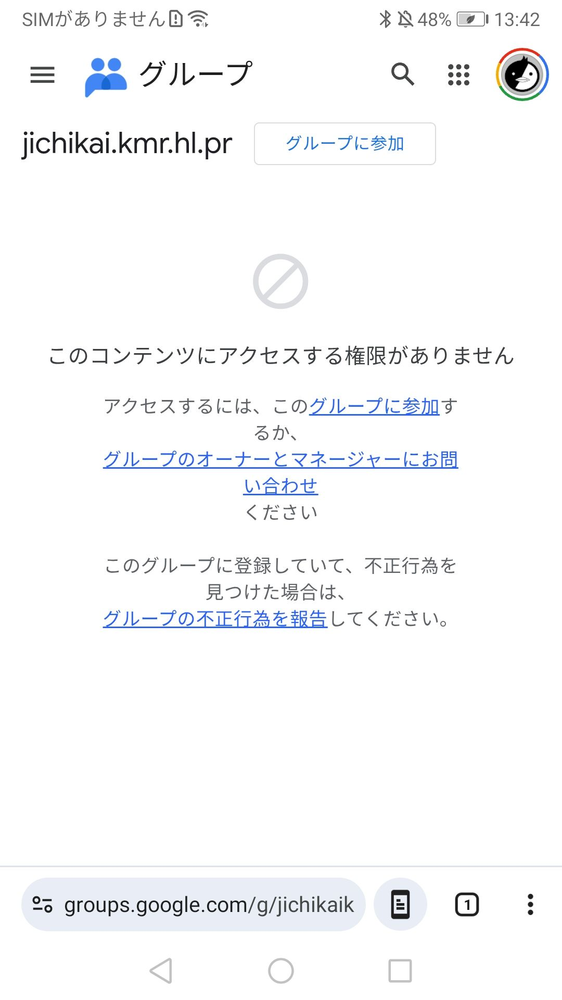
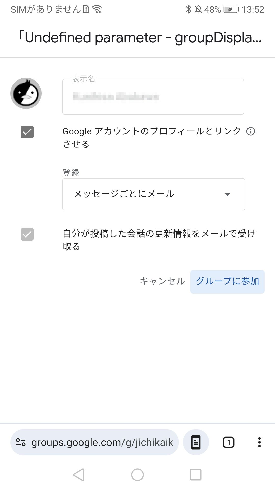
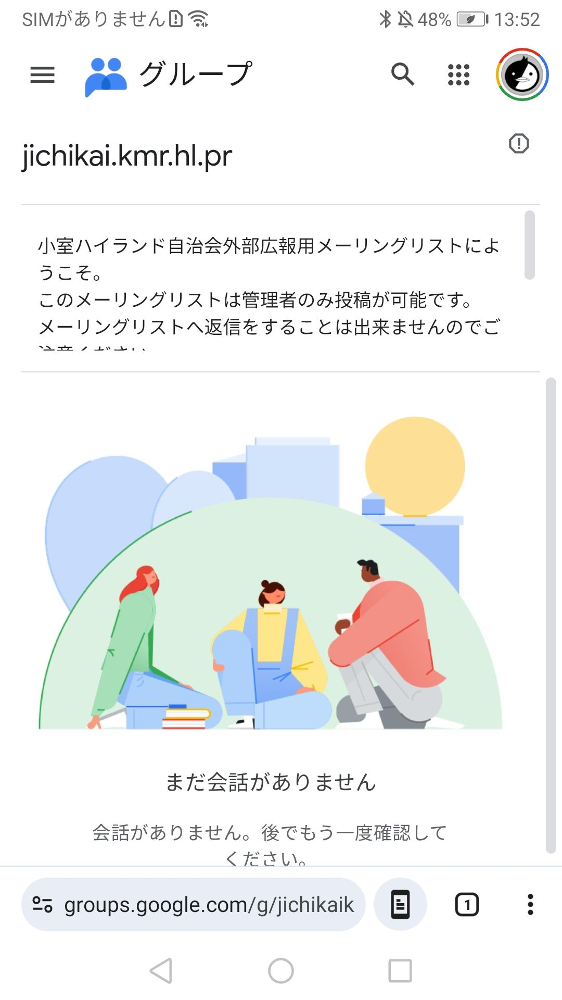

メール登録の手順
自治会からのお知らせを、メールでも受け取るための手順です。
スマートフォンの画面を見ながら、下の手順1 → 2 → 3の順に進めてください。
- インターネットにつながるスマートフォン（またはパソコン）
- この画面から参加する場合は、Gmail のメールアドレス
- 所要時間の目安：5〜10分
はじめての方は、先に Gmail を使える状態にしてから進めるとスムーズです。
画面の文字やボタンの位置は、機種によって少し違うことがあります。
はじめに（QRコードまたはボタン）
スマホのカメラで読み取ってください
- スマートフォンのカメラを起動します。
- 左のQRコードにカメラを向けます。
- 画面に出たリンクをタップして開きます。
QRコードが読めない場合は、下のボタンから同じページを開けます。
最初の画面で「グループに参加」を押す
QRコードを読み取ると、次のような画面が出ます。
「このコンテンツにアクセスする権限がありません」と書いてあっても、まだ登録前なので正常です。あわてなくて大丈夫です。
画面の上のほう、または文章の中にある
グループに参加
という青いリンク（またはボタン）を1回タップしてください。
押すと、次の「登録内容を入力する画面」に進みます。

上の「グループに参加」ボタン、または文章中の同じ文字のリンクを押します。
表示名とメールの受け取り方を選んで参加
参加の確認画面では、次の項目を確認します。
-
表示名
グループ内で見えるお名前です。そのままの名前で問題ありません。変えたいときだけ修正します。 -
登録（メールの受け取り方）
おすすめは 「メッセージごとにメール」 です。
自治会からのお知らせが届くたびに、メールが届きます。 - そのほかのチェック項目は、画面のとおりで大丈夫です（よくわからない場合は変更しなくて構いません）。
内容を確認したら、右下（または下のほう）の
グループに参加
をタップして完了です。
「キャンセル」を押すと参加せずに戻れます。

「表示名」と「登録」を確認し、最後に「グループに参加」を押します。
グループのトップ画面が出れば登録完了
参加が終わると、グループのトップ画面が開きます。
画面の説明文に、例えば次のような内容が出ていれば登録は成功しています。
小室ハイランド自治会外部広報用メーリングリストにようこそ。
このメーリングリストは管理者のみ投稿が可能です。
メーリングリストへ返信をすることは出来ませんのでご了承ください。
- ここは受け取り専用です。返信や投稿はできません（安心してください）。
- 自治会からの案内が届くと、ご登録のメールアドレスに届きます。
- 過去の投稿がある場合は、この画面から見られることがあります。
- 「まだ会話がありません」と出ていても、登録はできています。

グループ名と説明が表示されていれば、参加完了です。
よくある質問
Gmail のメールアドレスを持っていません
この画面からの参加には、Gmail のメールアドレスが必要です。無料で作れます。
お使いの電子メールアドレスだけで登録したい場合は、登録はこちらから、件名も本文も空のままメールを送って申し込めます。ご家族に手伝ってもらうのもおすすめです。
「権限がありません」と出て進めません
手順1の画面では、まだ参加前なのでそのメッセージが出ることがあります。
必ず 「グループに参加」 を押して、手順2へ進んでください。
メールが届きません
迷惑メールフォルダもご確認ください。
手順2で「登録」の受け取り方が「メールなし」などになっていないかも確認してください。
おすすめは「メッセージごとにメール」です。
やめたい（退会）ときは？
Google グループの画面から、いつでも退会できます。
操作が分からない場合は、ご家族の方と一緒に確認するか、自治会までお問い合わせください。
パソコンからも登録できますか？
はい。同じアドレス https://groups.google.com/g/jichikaikmrhlpr をブラウザで開き、「グループに参加」から同様に進めてください。